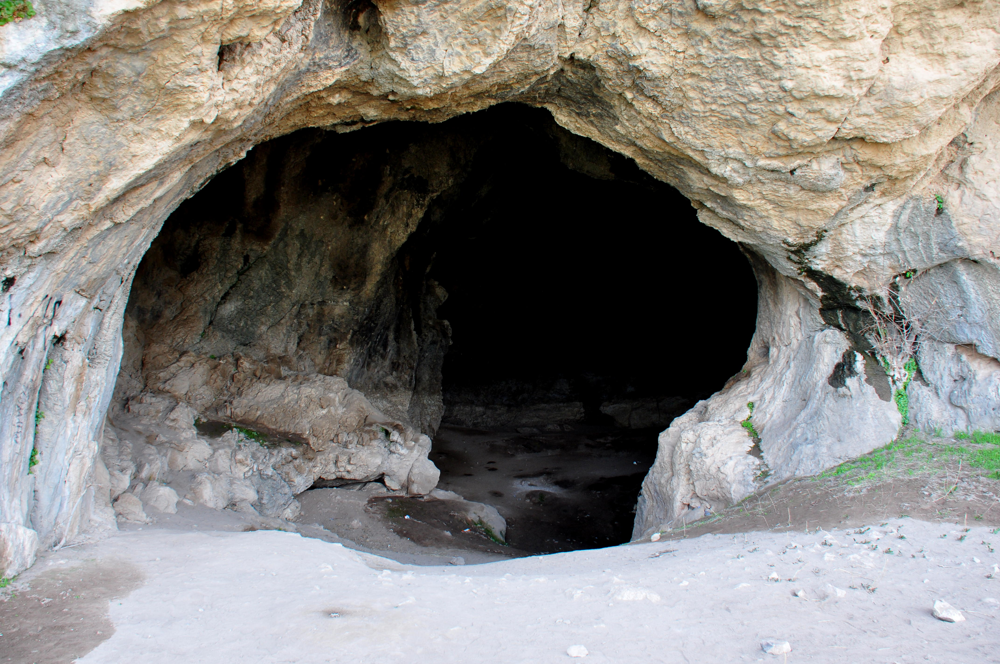

You are a gremlin, a being of unknown origin, a creature shrouded in mystery, and very short. You're right at the footsteps of the infamous dungeon that has taken many lives of adventurer's before you.
You have one goal, to find a hotdog in the dungeon. You recently had a craving for hotdogs and the local hotdog store is closed for the time being due to an "accident" that may or may not involve you. You didn't feel like making a hotdog at home nor felt like waiting for the store to open. So the best next thing is to raid a dungeon that has killed people for the silver of the chance for there to be a hotdog. Very logical.
Before heading into certain doom, you have to bring only one of the following items: a Snack or a big stick. You're not really sure why you brought snacks if you're planning on finding a hotdog but whatever. On the way to the dungeon you found a large stick and thought it looked cool so you decided to bring it with you. These items are mostly just for moral support in your quest for the fabled hotdog.
hmmm, im gonna bring some snacks
BIG STICK BIG STICK BIG STICK
